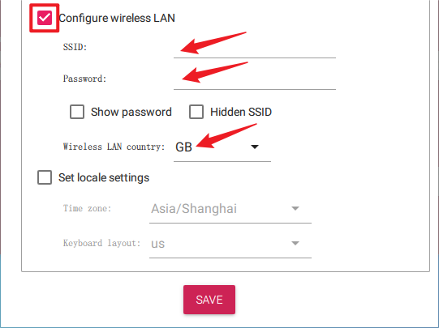
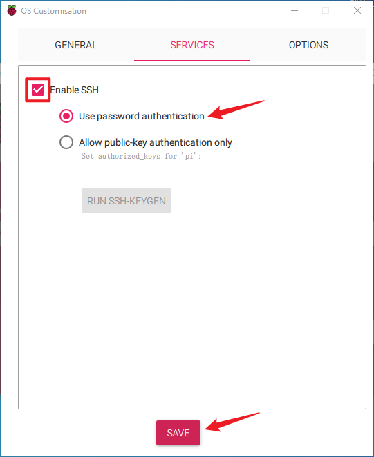

Bemerkung
Hallo und willkommen in der SunFounder Raspberry Pi & Arduino & ESP32 Enthusiasten-Gemeinschaft auf Facebook! Tauchen Sie tiefer ein in die Welt von Raspberry Pi, Arduino und ESP32 mit anderen Enthusiasten.
Warum beitreten?
Expertenunterstützung: Lösen Sie Nachverkaufsprobleme und technische Herausforderungen mit Hilfe unserer Gemeinschaft und unseres Teams.
Lernen & Teilen: Tauschen Sie Tipps und Anleitungen aus, um Ihre Fähigkeiten zu verbessern.
Exklusive Vorschauen: Erhalten Sie frühzeitigen Zugang zu neuen Produktankündigungen und exklusiven Einblicken.
Spezialrabatte: Genießen Sie exklusive Rabatte auf unsere neuesten Produkte.
Festliche Aktionen und Gewinnspiele: Nehmen Sie an Gewinnspielen und Feiertagsaktionen teil.
üëâ Sind Sie bereit, mit uns zu erkunden und zu erschaffen? Klicken Sie auf [hier] und treten Sie heute bei!
Betriebssystem installieren
Erforderliche Komponenten
Raspberry Pi
Ein Personal Computer
Eine Micro-SD-Karte
Installationsschritte
Besuchen Sie die Raspberry Pi Software-Downloadseite unter Raspberry Pi Imager. Wählen Sie die Imager-Version, die mit Ihrem Betriebssystem kompatibel ist. Laden Sie die Datei herunter und öffnen Sie sie, um die Installation zu starten.
Abhängig von Ihrem Betriebssystem kann während der Installation eine Sicherheitsabfrage erscheinen. Zum Beispiel könnte Windows eine Warnmeldung anzeigen. Wählen Sie in diesem Fall Weitere Informationen und dann Trotzdem ausführen. Befolgen Sie die Anweisungen auf dem Bildschirm, um die Installation des Raspberry Pi Imager abzuschließen.

Stecken Sie Ihre SD-Karte in den SD-Karten-Slot Ihres Computers oder Laptops.
Starten Sie die Raspberry Pi Imager-Anwendung, indem Sie auf das Symbol klicken oder
rpi-imagerin Ihr Terminal eingeben.
Klicken Sie auf GERÄT AUSWÄHLEN und wählen Sie Ihr spezifisches Raspberry Pi-Modell aus der Liste.

Klicken Sie dann auf Betriebssystem auswählen und wählen Sie ein Betriebssystem zur Installation aus.

Klicken Sie auf Speicher auswählen und wählen Sie das entsprechende Speichermedium für die Installation.
Bemerkung
Stellen Sie sicher, dass Sie das richtige Speichermedium auswählen. Um Verwirrung zu vermeiden, trennen Sie alle zusätzlichen Speichermedien, falls mehrere angeschlossen sind.

Klicken Sie auf WEITER und dann auf EINSTELLUNGEN BEARBEITEN, um Ihre OS-Einstellungen anzupassen. Falls Sie einen Monitor für Ihren Raspberry Pi haben, können Sie die nächsten Schritte überspringen und auf „Ja“ klicken, um die Installation zu starten. Weitere Einstellungen können Sie später am Monitor vornehmen.

Legen Sie einen Hostnamen für Ihren Raspberry Pi fest.
Bemerkung
Der Hostname ist der Netzwerk-Identifikator Ihres Raspberry Pi. Sie können auf Ihren Pi mit
<hostname>.localoder<hostname>.lanzugreifen.
Erstellen Sie einen Benutzernamen und ein Passwort für das Administratorkonto des Raspberry Pi.
Bemerkung
Das Erstellen eines eindeutigen Benutzernamens und Passworts ist wichtig, um die Sicherheit Ihres Raspberry Pi zu gewährleisten, da dieser kein Standardpasswort besitzt.

Konfigurieren Sie das drahtlose Netzwerk, indem Sie die SSID und das Passwort Ihres Netzwerks angeben.
Bemerkung
Stellen Sie das
Wireless LAN Countryauf den zwei Buchstaben umfassenden ISO/IEC alpha2 code ein, der Ihrem Standort entspricht.Klicken Sie auf DIENSTE und aktivieren Sie SSH für einen sicheren, passwortbasierten Fernzugriff. Vergessen Sie nicht, Ihre Einstellungen zu speichern.
Bestätigen Sie Ihre ausgewählten Einstellungen, indem Sie auf Ja klicken.
Falls sich bereits Daten auf der SD-Karte befinden, sichern Sie diese, um Datenverlust zu vermeiden. Falls keine Sicherung notwendig ist, klicken Sie auf Ja, um fortzufahren.

Der OS-Installationsprozess auf der SD-Karte wird gestartet. Nach Abschluss erscheint ein Bestätigungsdialog.